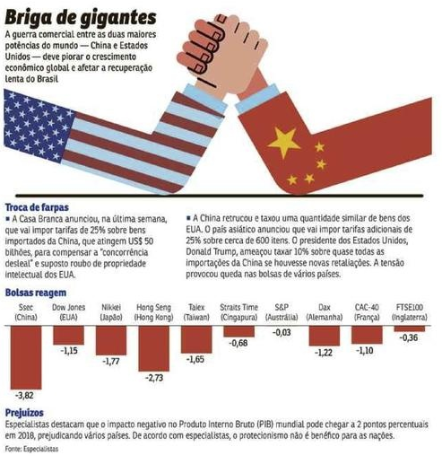

Resumo
As relações entre China e Estados Unidos têm sido marcadas por uma combinação de cooperação e
tensão ao longo das décadas, refletindo profundas diferenças ideológicas, interesses
estratégicos opostos e disputas econômicas.
O ponto de partida para as tensões modernas remonta a 1949, quando os comunistas liderados por
Mao Tsé-Tung venceram a Guerra Civil Chinesa e fundaram a República Popular da China. Os Estados
Unidos recusaram-se a reconhecer o novo regime e mantiveram relações diplomáticas com o governo
nacionalista exilado em Taiwan, criando um dos primeiros grandes focos de tensão. A Guerra da
Coreia (1950–1953), na qual as forças chinesas enfrentaram diretamente as tropas lideradas pelos
EUA, consolidou a rivalidade.

Durante a Guerra Fria, a China e os EUA permaneceram em campos opostos. No entanto, a partir dos
anos 1970, ocorreu uma reaproximação significativa. Em 1972, o presidente Richard Nixon visitou
Pequim, marcando o início do processo de normalização das relações diplomáticas. Esse processo
culminou em 1979, quando os EUA reconheceram oficialmente a República Popular da China e
encerraram relações diplomáticas com Taiwan.
Apesar disso, as décadas seguintes foram marcadas por desconfiança. O massacre da Praça da Paz
Celestial em 1989 causou forte reação internacional, incluindo sanções e críticas severas por
parte dos EUA. Nos anos 1990, as tensões aumentaram novamente, com episódios como os testes de
mísseis chineses no Estreito de Taiwan (1995–1996) e o bombardeio da embaixada chinesa em
Belgrado por forças da OTAN em 1999, durante a Guerra do Kosovo — que Pequim considerou uma
provocação deliberada.
No início dos anos 2000, a China ingressou na Organização Mundial do Comércio (OMC), com apoio
dos Estados Unidos. Esse passo fortaleceu os laços econômicos, mas também gerou preocupações
crescentes em Washington sobre práticas comerciais chinesas, como subsídios estatais, roubo de
propriedade intelectual e barreiras de acesso ao mercado. Paralelamente, a ascensão econômica e
militar da China passou a ser vista como um desafio estratégico.
A partir de 2017, com a administração de Donald Trump, as tensões se intensificaram
significativamente. Foi iniciada uma guerra comercial, com tarifas bilaterais atingindo centenas
de bilhões de dólares em produtos. Além disso, os EUA impuseram restrições à gigante tecnológica
Huawei e outras empresas chinesas, alegando riscos à segurança nacional. A repressão chinesa em
Hong Kong e a resposta inicial de Pequim à pandemia de COVID-19 também geraram críticas duras
por parte do governo norte-americano.
Com a chegada de Joe Biden à presidência em 2021, houve uma mudança de tom, mas não de
substância. A rivalidade estratégica permaneceu, especialmente em torno de temas como
tecnologia, direitos humanos, segurança no Indo-Pacífico e, sobretudo, Taiwan. A visita da
presidente da Câmara dos EUA, Nancy Pelosi, a Taiwan em 2022 provocou uma reação militar
agressiva da China, que realizou exercícios militares ao redor da ilha, aprofundando o risco de
confronto.
Atualmente, China e EUA mantêm uma relação marcada por interdependência econômica, mas com
crescente desconfiança mútua. A disputa por hegemonia tecnológica, a questão de Taiwan, o papel
da China em fóruns internacionais e sua parceria com países como Rússia e Irã continuam a
alimentar um cenário global de competição acirrada entre as duas potências.